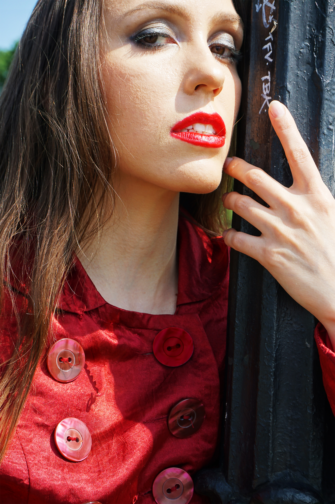
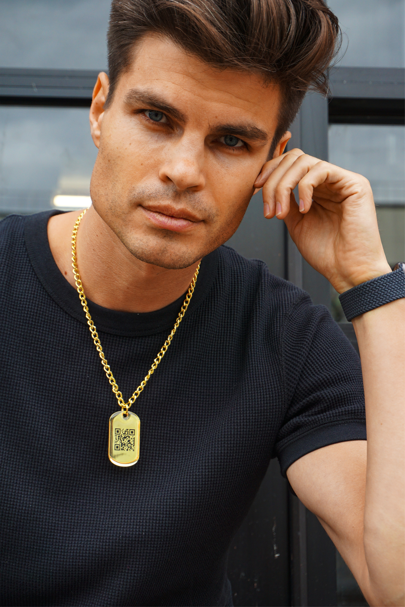
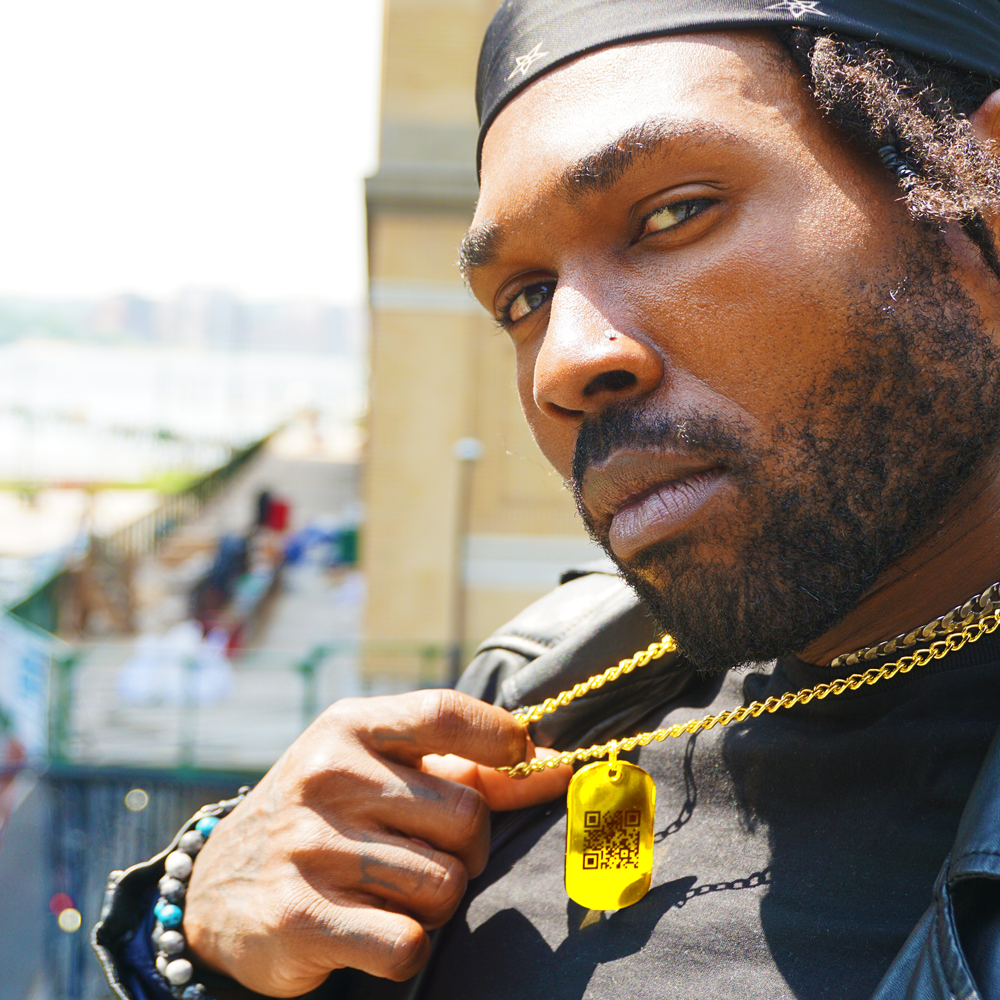
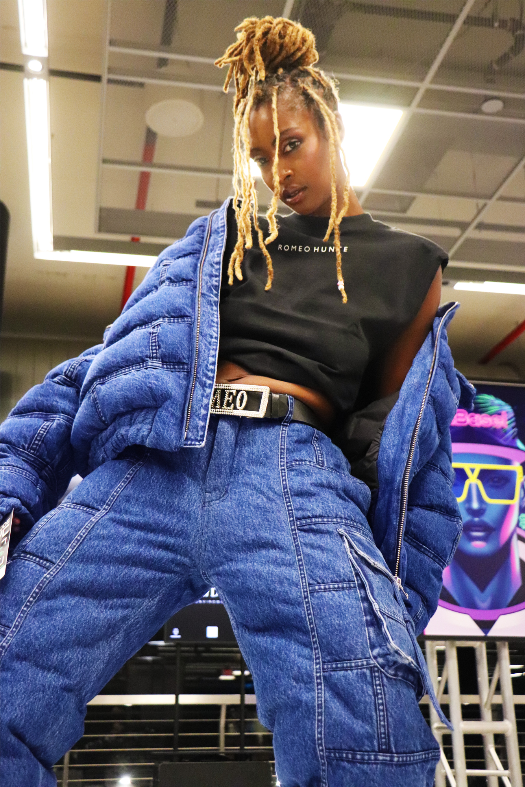
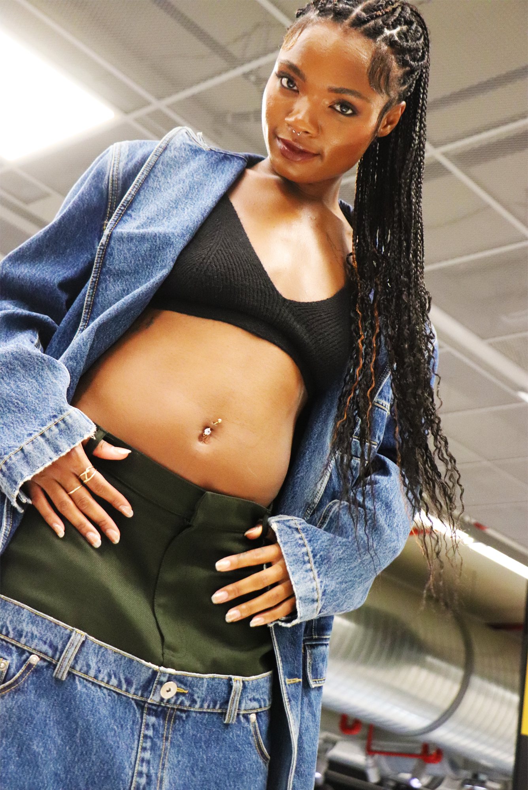
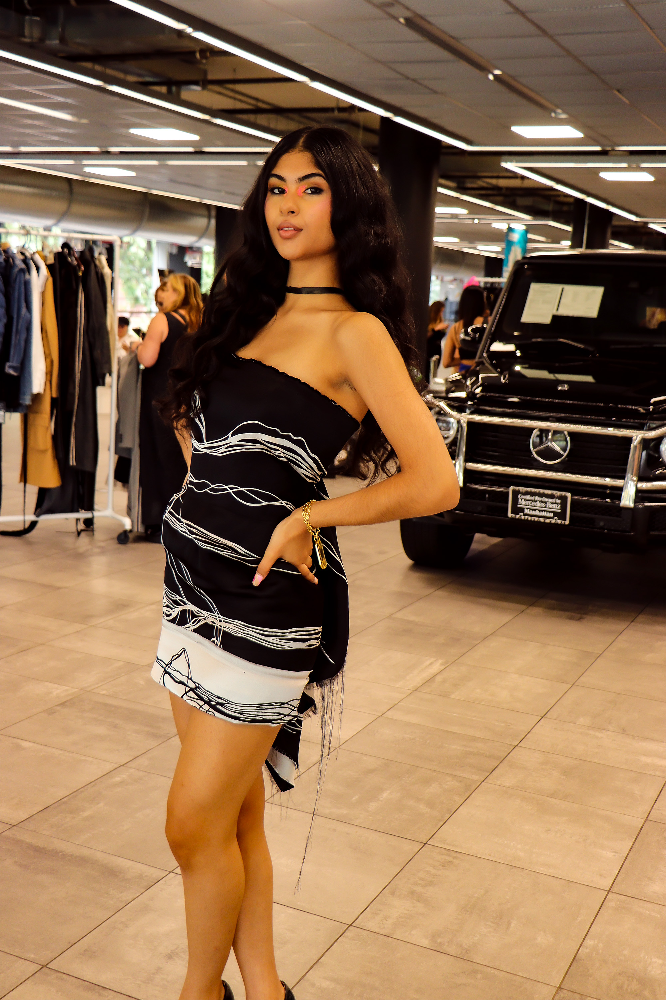
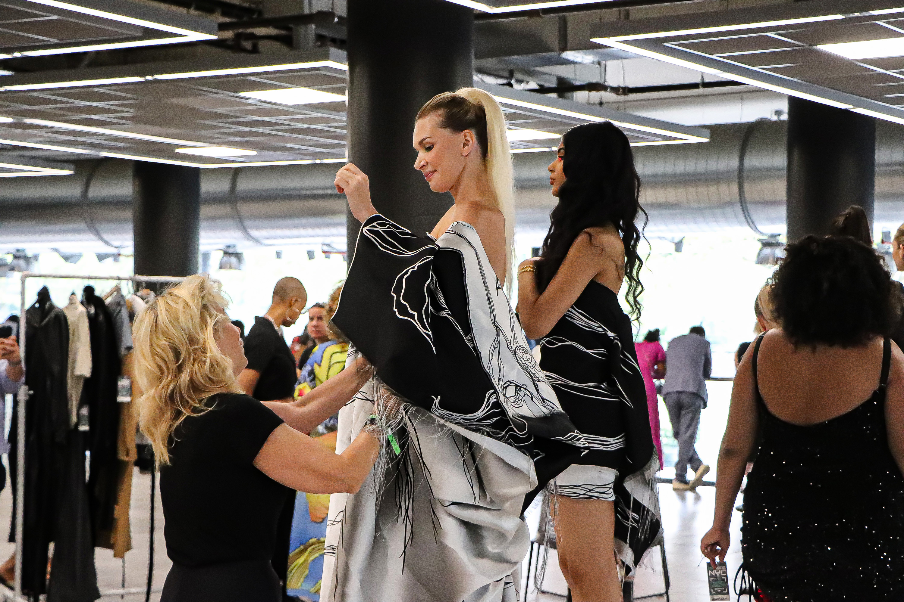
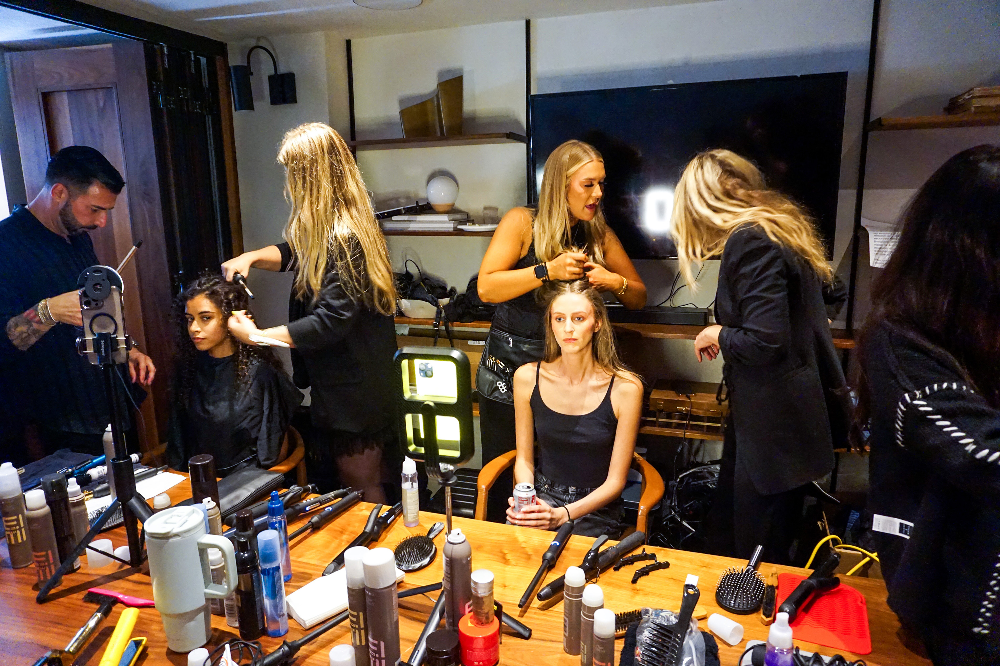

With a passion for aesthetic and a penchant for transcending the ordinary, Rito invites viewers to see things through his own lens in Ritography. Rito seeks authenticity in photo-taking approach, often seeking opportunities to capture images with a candid appeal but occasionally mixing in well-composed guided scenes. While he believes beauty can be found from many perspectives, he applies his imagination to uncover it in ways that resonate with his values.
Explore Ritography, see through Rito's lens of the world
Photography Genres
Landscape Photography by Rito
As Rito explores, so does he carry memories of the world behind him. He captures a point of view and lays it bare for all to see. Here are portraits but of environments making expressive statements for viewers to behold as witnesses.
Tap the image to view it upclose in gallery-slider view. (Optimal for desktop, useless on mobile]
The Eye of the Oasis
The greener centers of where you want to be will always bloom where glimmers of refreshment flow by.
The Dusk Burnt Sky
When all else evaporates, you can only thank the sun for reeding out the sky, then all is left is the next hello before dawn.
The City of Fluorescent Grains
When the oversaturated luminescence makes everything so clear, it must be watered-down and drowned with the grains.
The Warm Haze Awaits
Trains metaphorize journeys, but when the path is right in front of you, warm and welcoming, but with an ominous haze to lead astray... will you get on board?
The Root of All Suburbia
When everything desolate seems to have rotted, life builds on the same foundation. The end is never what it seems.
A Champion's Stand
To be fortified is to be perched and impregnable, what greater feat than to allow those to pass from within?



Rito has a way with not only finding emotion and capturing it visually, but creating them through his presence as a photographer. See here his photographic interactions with models to create portraits embodying human qualities beyond mere aesthetic.
Portrait Photography
(Creative) Fashion Show Photography
Not the standard runway full body shots


Backstage at Fashion Shows
DeMODE NYFW 2023 Fall
Rito was a featured designer alongside others like Romeo Hunte and Pamela Dennis at the DeMODE fashion show by creative director Emily Burnett. In addition to powering the event with his fashion tech via Jumptag wearable necklaces, he was also very much camera ready.


Romeo Hunte 2024 Fall
NYFW Asia Society 2024
In what was a robust and multi-layered fashion event hosted by Asia Society in coordination with Fashion Mingle and sponsored by many other brands including Rito's own Jumptag Club, Rito's enthusiasm and energy lead to capture of the entirety of the event at every major phase.
Rito had the pleasure of shooting the Custo Barcelona runway event showcased at the Walker Hotel.

Street shots
Rito's eye for detail is hard to suppress, it's an impulse as much as an attitude. Some of the best times to shoot are when a camera isn't present. Rito opportunistically basks in the moments when he can spontaneously capture images with people living actual moments in life.